· ✦ ·

For the most incredible woman
· ✦ ·
To the girl,
to the woman,
to my love
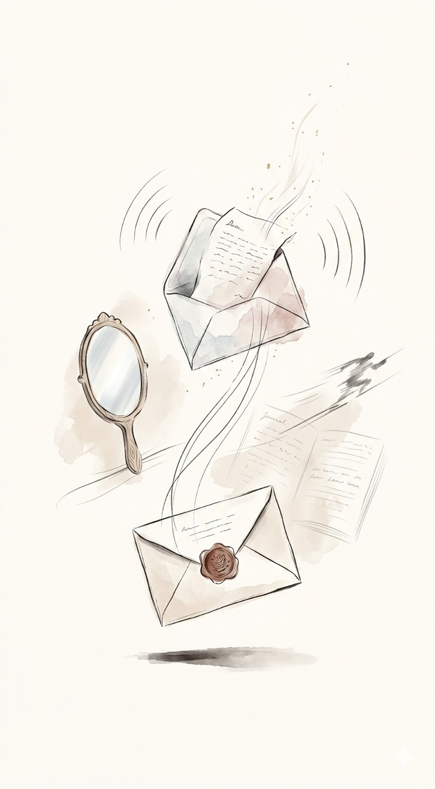
I have a crush on you but not in the way crushes now work, where you scroll through their social media and all your friends lurk. I mean in the way that I want to record your laugh, play it back to God, and thank Him on everyone's behalf. I mean in the way that for you I'd pull myself together, deconstruct my worst habits, because for you, I'd want to be better. And consequently, for myself you inspire a new perspective. You hold up a mirror and tell me I should really be more perceptive. You reflect the best parts of me, but hold space for the worst, improvising as we go because love shouldn't be rehearsed. Those spaces might fill. I might not be who you thought. I might be someone better than the idea you first bought. And if you have a crush on me the real me, then I hope you grab a journal and a fully loaded pen, Write a letter to me and say, "I know how this might go. I know how this might play out but I'm sick of being scared of a feeling I really want to know." Serendipity, they call it, as I write a letter too to say, "I know how this might go, but I have a huge crush on you." However, only one letter is sent. I have a crush on you in the running through the airport sort of way. The other is hand-delivered and I wouldn't have it any other way.

I know, we've only just met, again, and I don't mean to move too fast, but I couldn't sleep last night because I don't know your right now state. Or how you take your tea. And for some reason, there is nothing in this world I'd rather know. Except maybe how your hair looks when it's messy in the morning. Or what makes you laugh until you cry. Or what makes you laugh when you are crying. Either or both. Or all of those small, sacred facts would be fine. And I know we've only just met, again, and I don't mean to move too fast, but I couldn't focus this morning because I need to know your preference in takeout food, and the dreams you'd never say out loud but secretly wish would come true. And if I were to buy you flowers, would you want them to be blue? And I know we've only just met again, and I don't mean to move too fast, but suddenly your voice in my head is playing on repeat. And I'll probably never say any of this to you. And I should probably get some sleep. It's just that suddenly everything that's significant to you is significant to me.
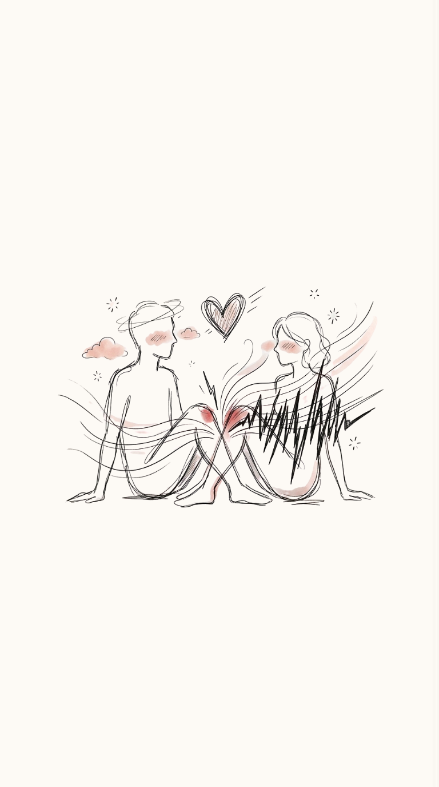
You want me to say it? I'll say it. Being around you makes me nervous. But if nerves were a pool, I would high dive belly flop, embarrass myself just to try to look cool. Because you make my heart beat faster. You don't mean to. I know. But when I'm next to you, why would I care to watch any stupid show? Finish the sentence. Look away. If I could be next to you, I would let my hyperventilation stay. Because with you, I feel nervous but the kind of anxiety that turns into humor. I'm laughing at how ridiculous it was that my greatest insecurity was being a late bloomer. You make me shy in that way that makes you have to smile like I can't look at you for too long or my heart grows legs to sprint a smile, to sprint a mile. I'm smiling at you. I'm blushing. You're so pretty, by the way. And I would feel pretty lucky to remind you of that every day. Being around you makes me jumpy in a chaotic sort of calm as if a heavy metal rock band covered a beautiful, ethereal song. You make me feel excited. Maybe you can tell. Because when your knee kisses mine, I'm put under a spell that starts with Oh God and ends with please, no more. My hands cover my face. I've never been giddy like this before. So I push my leg closer. We're both sitting on the floor, challenging the limits of tension until we can't take it anymore.
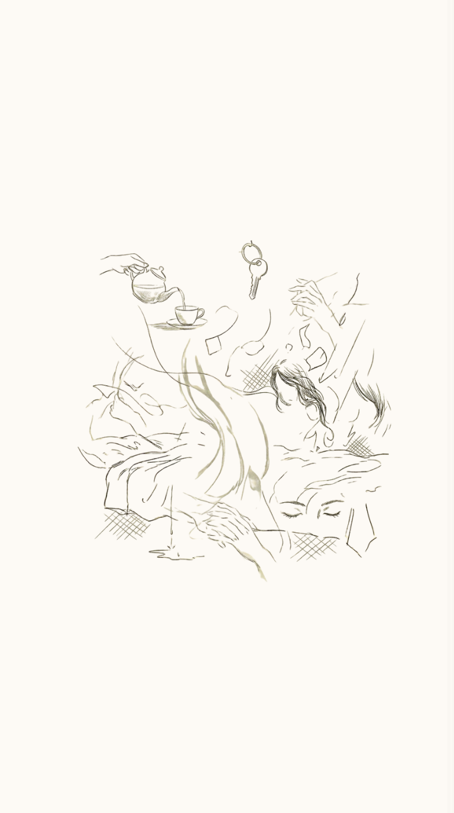
I hope that the next person, that calls you beautiful, Does so in a way that encompasses all of you. I hope when they call you beautiful, They mean your voice in the morning, Of the light in your eyes, When you talk about the things you are passionate about. I hope when they call you beautiful, They mean the way you forget your keys everyday, So you say goodbye, twice before you leave. I hope they mean the way you sleep, The way you cry, The way you cough, The way you make your tea, The fine way you like to save up, The way you stroke your makeup. I hope they see what lies within you, The tender heart, The kindness set apart, The strength in your walks, The fear in your shades, And still, accept all of your beauty. Because, the next time someone calls you beautiful, Nothing about the way you exist should be disregarded, You are not beautiful in the way a single rose petal is, You are beautiful in the way a garden is.

You used to demand it, "say something nice", Like a child checking, if the nightlight still worked. I'd mumble "your hair smells like stolen apples" Or "your knee is a compass pointing home" Dumb shit that made you snort, Then curl into my ribs like a surrendered fist. Now the silence between us, is the something nice, I can't say: The way you used to sigh, When I got it right, as if kindness surprised you. I rehearse it in the dark, Talking to your ghost on the pillow. The words haven't changed. Only the ears... that hear them.
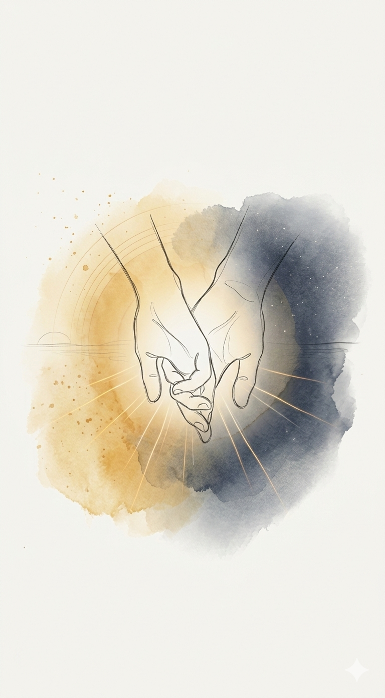
I can't promise you sunshine every single day. But I can promise you this: Even in the darkest night, my hand will never let go of yours. I love spending time with you even if we do nothing at all. Having you next to me is enough to make me happy. It's not the place. It's not the moment. It's simply you. I don't want other lips. I don't want other eyes. I don't want other hands. I don't want anything that isn't yours.
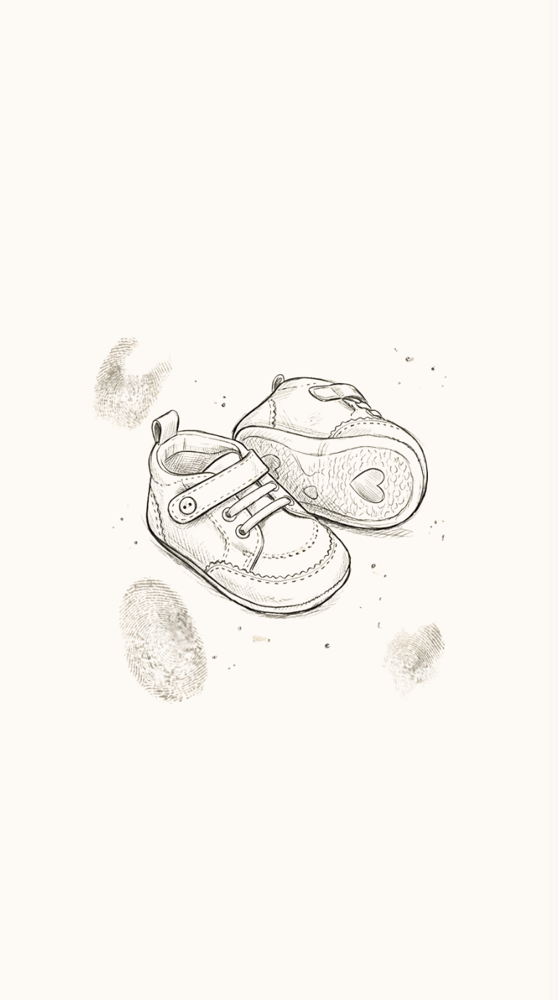
There was this one phone call. I remember your excited voice. I said, just hypothetically, and we couldn't agree on a girl's name but we did settle on the boys. I don't actually want children, but for the length of that call, it was nice to imagine it. I remember the scene vividly: I was on my balcony, swaying in a mind hammock, staring at nothing at all. Beneath my bare feet, the street hummed vehicles horns blaring, air thick with the scent of summer. The moment felt surreal, so I let my thoughts wander to places they weren't meant to see. I actually talked about baby names for a child that didn't exist, that was never meant to be. It was heartwarming. I know that sounds confusing. It is, for me too. I guess I just love discussing baby names with you. But we had more of those moments not just baby talk, but soft looks, like virtual romantic date nights, uncontrolled laughter spilling in between. I think that's why I couldn't let go. I didn't want to lose the glow of all those moments. I wanted my thoughts to visit all those beautiful places, places they were never meant to see, even if they always felt a bit surreal. All those beautiful places, out now.

If I'm being honest, you are the best kind of good I've ever known. Sometimes I think about how rare it is to find a connection that feels this aligned how every part of me understands exactly where it's meant to be. I think about how our paths could have crossed a hundred different ways and still ended here. How the timing somehow worked even when everything else didn't. And I don't think I'll ever stop being thankful thankful of what we'd built continues to mean something lasting. Thankful that what we built together keeps giving me a truer view of myself, and a future that still feels like ours. You're not just my lover. You're my friend. My safe place. My everything in one. With you, I don't have to pretend. I can be messy, quiet, loud, soft, and still be loved the same. You're not a chapter. You're the whole story.

I knew I loved you because you're not just on my mind when I'm alone. I think about you even when I'm having the time of my life, surrounded by people I care about. And yet, I still find myself wishing you were there to share it with me. Whether you see this tonight before you close your eyes, or in the morning when the sun kisses your beautiful face, I just want you to know: I love you. I love everything about you the way you speak, your smile, that little laugh you do when you're trying not to laugh. I love you completely. You've become the thought that quiets my mind, and the feeling that fills my heart. Every day, I find new reasons to love you in the way you care, the way you listen, the way you simply exist. You make the world feel gentler, and me feel more like myself. No matter where life takes us, I'll always be grateful that our paths found each other To you.
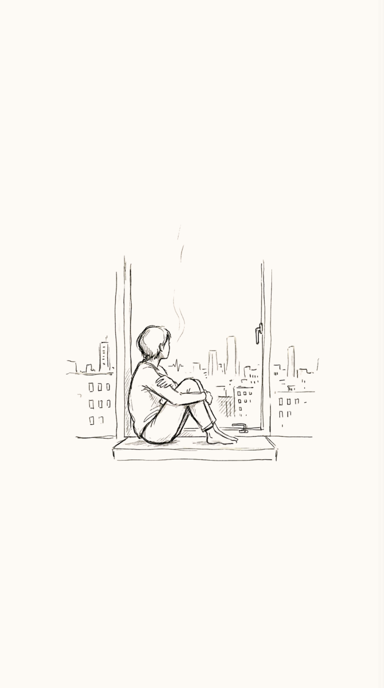
They say distance makes the heart grow fonder. But the longer I love you from afar, the more I wonder if this phase of bonding apart will ever have an end. If I'll ever be able to take your stress away without words, because company can speak in silence. And your touch when it's near never fails to bring me ease. There are days I count on the minutes, and the air I breathe tastes bittersweet. In every room, even those with windows, I search for a hint of you. But the fix I need is not in proximity. I can't just turn a corner to your door, or unknot my chest that aches from holding your hand as close as I can until the next time. I'm a city in the dark, lit by artificial lights. When you're away, I cling to mornings that are bright but you are the natural part of my world that truly shines. And it's just not the same when you, are out of sight.

Your words pierce me like needles, breaking clean through skin. From the outside I look numb, but I am stinging from within. I tell myself that words can't cut but yours arrive like sharpened knives, whittling at my heartstrings, shaving away what I thought was mine. Sometimes they slice so deeply my heart hangs on by a thread. But even at their sharpest, your words have never left me dead. Because somehow, through the hurting, you make me think of gentler things blueprints spread across a table, white houses learning how to breathe. Fenced in yards and wraparound porches, backseat laughter, tiny shoes. I don't know how pain and hope can coexist the way they do with you. I've always been afraid of tomorrow of leaving my twenties behind, of misplacing my memories as the years slip through my mind. But you make me imagine staying. You make me picture time slowing down two rocking chairs, creaking softly, as the world forgets to make a sound. Growing old and losing track together, forgetting names, forgetting dates but never forgetting this feeling, even when my heart still aches. Your words may carve me open, leave me trembling, bruised, and sore but they also sketch a future I never dared to want before.

You are the storm I walk into willingly, the fire I touch without fear of the burn. You live in the spaces between my thoughts, where reason ends and longing begins. You are every heartbeat that forgets its rhythm, every breath that aches just to be near you. Loving you is not a choice it is a beautiful kind of madness I never want to heal from.
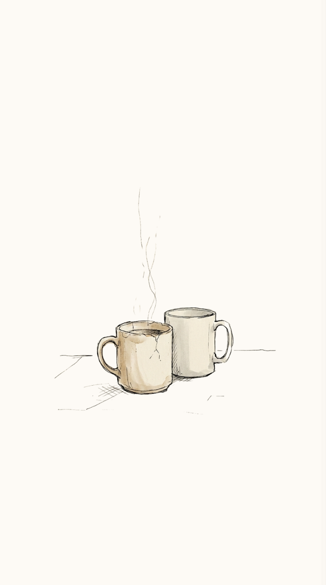
Can i stay a little bit longer? Just a few more minutes, just until the sun is up. Just one more coffee that you bring me to bed in your favourite mug. Just one more kiss before we agree that this isn't working anymore I promise i won't be a bore, Just... let me grow stronger. Can i stay a little bit longer?
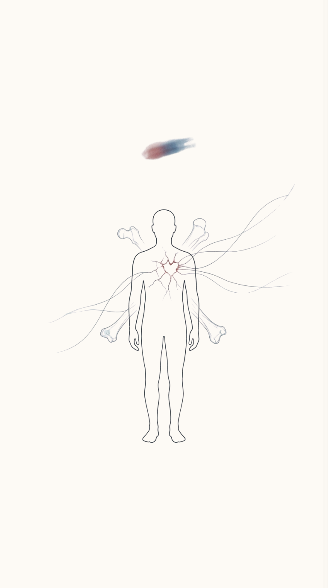
They don't send ambulances for broken hearts And when help doesn't come, we start to wonder if we must break our own bones, make the outside reflect how it feels within. Maybe then they'll send help. Maybe then they'll listen. Maybe then they'll believe us when we say we hurt. Why can't the evidence of my ache be the way that I feel? Why does blood have to spill to make my pain look real? I don't think the world should wait for people to puncture their skin to worry about the trouble within. I wish we treated broken hearts like broken bones and sent ambulances for bleeding souls.
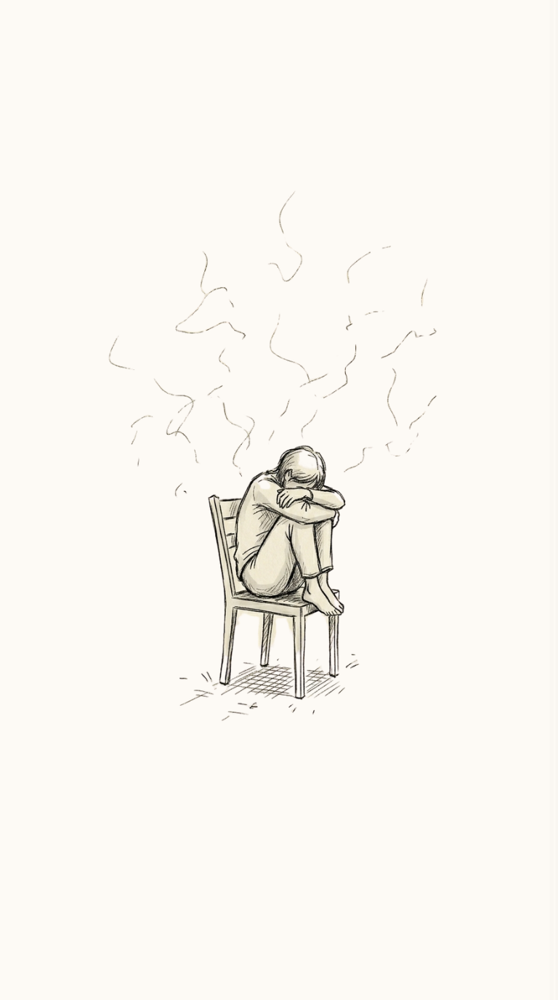
Sometimes you meet someone who requires all the love you have to give. If you lose that someone you think... everything else is gonnna stop too but everything else just keeps on going The worst feeling is... When you find out you didn't mean to someone as much as you thought you did And then you just feel stupid for caring to much. I wish i didn't care about anything. But i do. I care too much. Sometimes the only reason you won't let go of what's making you sad is because... it was the only thing that made you happy.

I see you in the sea but it's not us, it's you and me. It's me missing who we were and all the things we could have been. I see you in the sea and I wonder where you could be. I hear your voice amongst the waves, but it's just the water roaming free... falling, crashing, collapsing against the sand, the salt, the breeze. I see you in the sea, hear your voice within the wind but where the sky and ocean collide, in their reflection, it's just me.

"Are you okay?" they ask. And I answer too quickly as i can before they notice the earthquakes in my voice, the tsunamis in my eyes, the drought stretching wide across my heart. In every room, I look for you even knowing we might exist in opposite universes. I'm suspended somewhere between not knowing where you are and wanting desperately to be there. I heard you like puzzles. So here take this jigsaw I call my heart. It comes in a million broken pieces, jagged at the edges, missing corners, smudged with fingerprints of old fears. I hope you're patient. I hope you're careful. I hope you're smart. And when you place the final trembling piece into its rightful space, I hope you hang me on the wall Like an art not as something you fixed, but something you chose to keep whole. Because I don't want you to build me up. Just to learn... how easily I come apart.

In the silence of ocean, Comes crashing waves of tsunami, Meanders, then it grapples and locks Your foul, treacherous almighty qualmy. You clinch, you slam, You crucifix my soul. Yet you choke me and repopulate, This vile consciousness to make me whole. You dust me and play games with me, Stupid me, gets lost in your delight. Show me a way my moonlight, And i shall triumph thy Kryptonite. Figment of my imagination, Drag me to the shade in vain. The touch, the beating sound, Lucid music playing in the background. Trembling body with excitement, Cherry lips, as i approach to make you mine, Phase the apparition, fumbling and dancing with your rain.
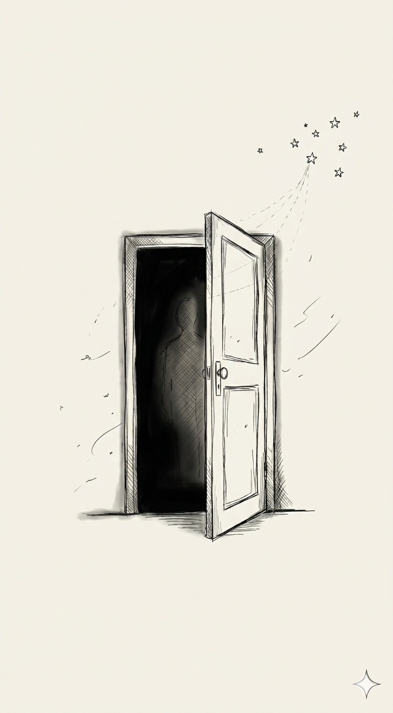
Yes, I believe we could have made it work. I have loved her more than anything else. But... for someone who wants to leave, You cannot make them stay, No matter what you do. I miss the little things. I remember her small habits vividly. Tch... I was so eager for her to be my family, My wife. I don't know, Each passing day, Even now, The wound feels fresh, As if it were just yesterday, we parted. I tell myself: She is gone. I repeat it to myself like a mantra, Hoping to someday believe it, Really believe That the love of my life is not mine anymore. It feels foolish to cry Over someone who was in your past. But then I guess, I like being a fool Who believes My love, my soulmate, Will come find her way back home. I am her home. It's not false hope. It's just who I am. I love my baby, And she is the only one for me. Even if she doesn't come back, It's alright. I won't condemn her. But still, I'll leave the door of our home Open Anyway.
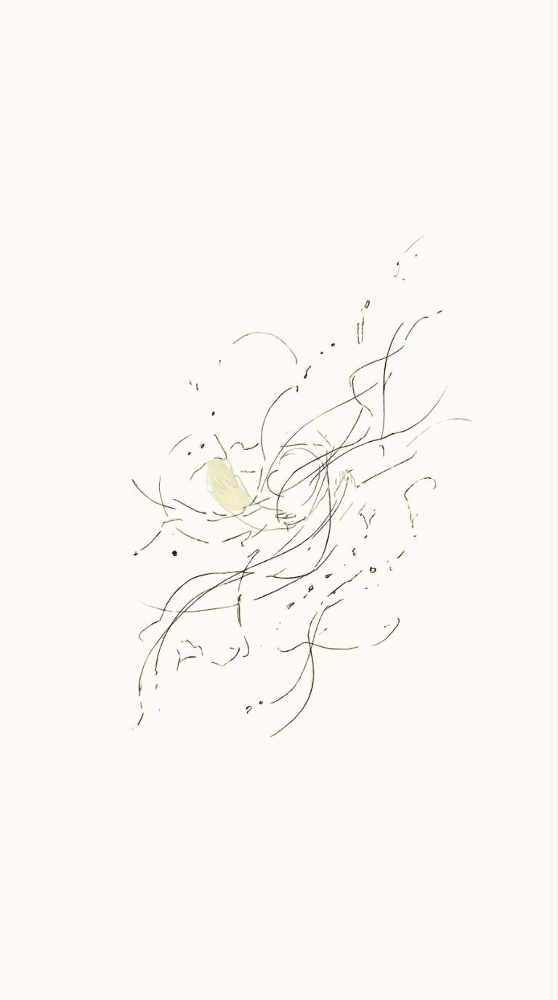
Hundreds of times, I've written the words, How are you doing? Maybe come back home now? And deleted them all the same. I know I can't be the one to initiate, And I wait for the day, that may never come, And yet I wait, hoping to see a miracle. But maybe, I don't need your love in return, All I seek is for your heart to be at peace. But I am also selfish, loving you is not holding on to you, It's about feeling alive, even in the shadows you left with me. I have loved and I have felt, because of you, I have become who I've always wanted to be. You're a bastard, you'd say. Well, no more an ignorant bastard, Somebody who fights for what he loves, And I will fight for you, in silence.
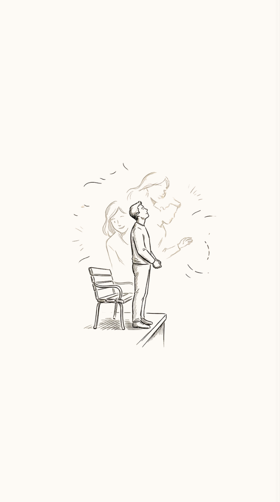
Fragrance of your smile and laugh as though it was just a moment ago. reverberates and echoes... unable to let go. Your eyes, your lips, your hair, and your cheeks. fills my heart with never-ending peace. The best thing you are to me... here, then swept away like dawn. Yet fragments mark, like shrapnel etch in the soul begone. The talks and the waiting when rings the call... Jolts my body in the hopes you've rung. Your love, your care Your patience I've wronged Penance and redemption One chance please, but you shunned. Past a decade, yet memories afresh My love, you live, full of happiness every day. I shall carry our love to the grave A decade or two, three or four Every year, I'll pray for the reunion of the decade.
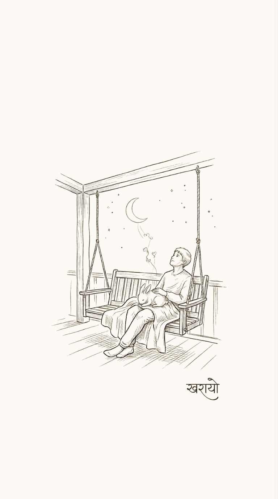
In the most unexpected of stormy ways, Polarized and lost while gazing at the stars. You came hoping, one instance, one trick, Locked eyes melting and mending my hearts. The best thing that ever happened to me, Naps on my chest and good morning squeak. Home rush from work, putting her to bed, "say something nice", and nice said this geek. Ginger tea on a rattling swing, Stealthy and courageous was your spirit. Feline named kharayo, your bucktooth i looked, Goodbye baby,.............. Sometimes when i look at the moon, I like to imagine, you are looking too. Our gaze is a bridge, from us to the sky, And there's an invisible line that connects, you and I. And even if i'm miles away from you, After sunset, can we meet on the moon?
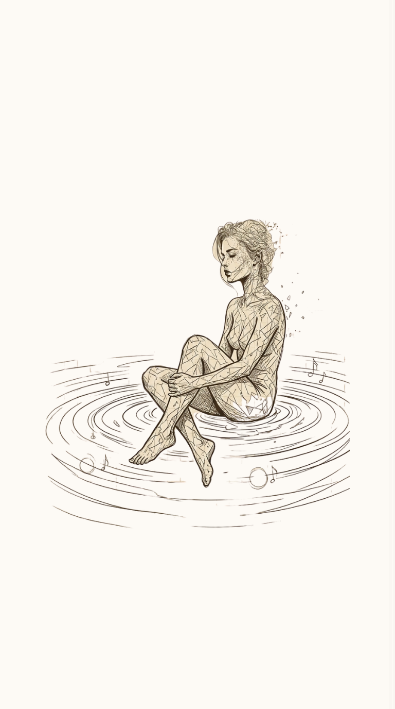
Although I know you're gone, Accepting it feels far more dreadful, That living in a bubble of defiance, Feels far more comforting. And like that, I don't know, I don't know why I work so hard, For whom? For why? It was all for us once, "You are my everything, everything I do is for us." Those laughter and sigh imprinted, In the recordings of my Vinyl mind. Be it agony or delight, Only the tunes of your memories play. You are not just the love of my life, You are the quiet space, Between my heartbeats where peace lives, I'll lock it up and keep it afloat.
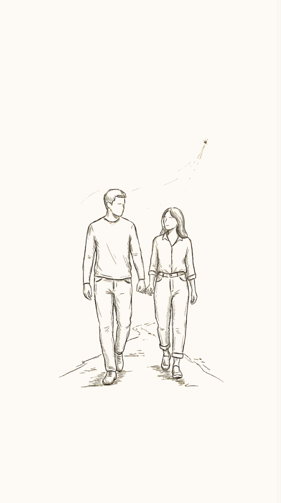
We're probably not meant for each other, But if today you were to call to say YOU NEED ME, I don't think the past would matter, After all if I could hear your voice shaky, If I could sense there's something wrong, IF you needed someone to talk to... I'd be on the way and say, shouldn't take me too long, If you were on the other side of the planet, If you were on a completely different star, I'd be looking up ways to get to you before you hung up. And I'd try, I'd really try to not get there too late. If your text sounded serious, If your voicemail had even just a hint of dread, I'd hit that call back button so fast, To hear whatever it is that needs to be said. If you sounded small, quiet, scared, stressed, I'd be the safe place to hear all your secrets confessed. If you were excited but nervous, If the overthinking had won, If your train of thoughts is doing donuts... Just say the word and to you... I would run With whatever you needed, patience, time, courage, safety, Your hand held in mine. If i saw your name pop up and was busy, tired, If you said you felt insecure, I'd remind you you've always been admired, If it's in person and you can't find the words to say, How you've been feeling, I'd sit with you in silence, Until you feel better any day. If it's in insta video call to see, If you start crying as soon as you look at me, I'd hold you so gently so as not to break anything more, Then help you see all the times, You've made yourself come back even better than before, Because if I could hear it, The sadness in your voice, You'd have about two seconds before I'm all in to help you. That will always be, my choice. Even if we aren't right for each other, Even if we're never gonna be meant to be, Even if we're just friends forever, You're still gonna mean, so much to me. And if you called and needed something, If you were in pain, If you were in fear, Of course, I'd be there, Of course, I am here. If you hesitated to call me, Don't hesitate, CALL. If you think nobody cares... Surprise, somebody does afterall. If you think it's too late, It isn't, I'm still here. A life worth living isn't a life lived in fear. If you are staring at my number, Wondering who's on the other side of the line, It's still someone who cares about you, Thinks of you... As your beloved... friend.
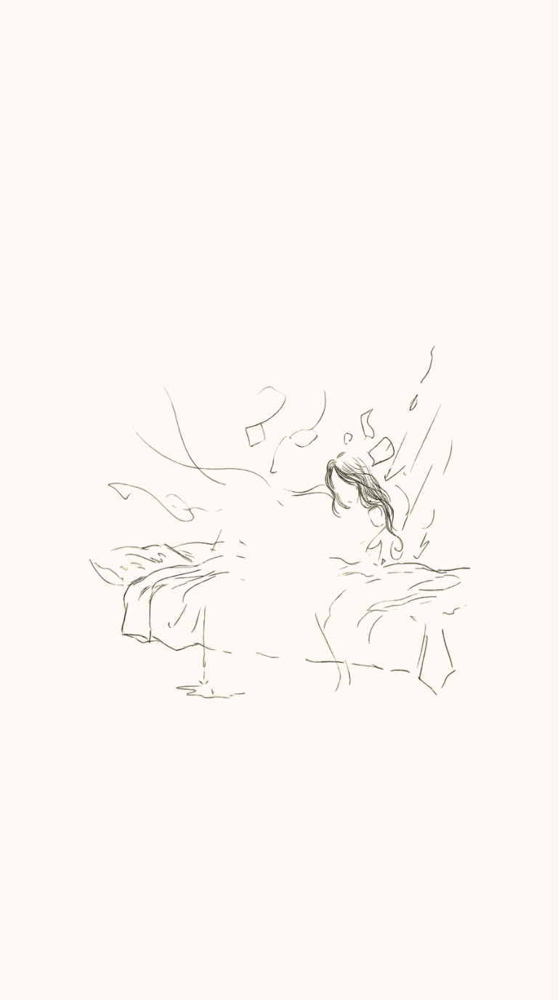
Someday when you wake up and you realize, Maybe not, maybe it doesn't have to be this way. Maybe it's alright to let go, to really let go. Of course, it was small dreams, Like playing with her hair on the bed, Her small scolds when i mischief, The eye when i don't do the dishes, Just looking into her eyes and caressing her face, Realizing how lucky i was to have her, Long sunset hand held walks, cuddling and warming up the cold nights, The girl who makes me laugh and adore, Whose belly i wanna rub when she's annoyed by some silly deed i did, For someone I've prayed for, My best friend I've longed for. But maybe, just maybe it's time, It's time to say good bye. Maybe it's alright to let you live your life, While i am still stuck, i'll find a way, I'll find a way to be happy again, As i was before you, Maybe it's time..... to wake up.

Screenshots and photographs hundreds remain, Yet untouched, until today. The laughter, the kisses, the whispered goodnights, "Say something nice" you'd whisper, all rushed today. Desires and dreams, once mingled as one, our souls entwined, a bond never undone. Off track and distant, I lost my way, hurt you I did, though I never meant that day. I'm sorry, truly—you are my all, your patience, your grace, worth decades by far. I'll wait, yet I must learn to move on, rediscover, rewind-my life's reset, begun. No one has it all, But everyone has enough. With faith in the unknown, Live beautifully, my kharayo. in a world that's gentle, not shadowed by sorrow. I'll search for my own pulsar, Goodbye, my star. Be seeing you, my love, Tea on a porch someday... Vibrance and connection, a memento to reminisce, my dearest friend, I must move on, but I'll always miss.
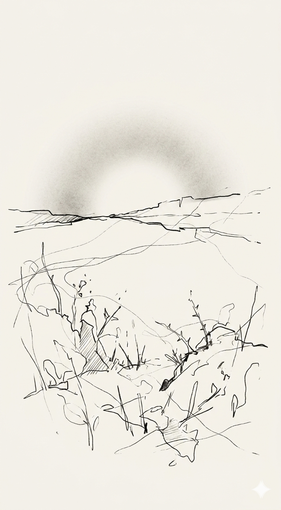
I am not here to say that love simply stumbles upon us like it does in fairy tales. It does not always bump into everyone. It does not always stay. And life life is not all gardens and blooming. More often it is weeds, and thorns, and long, unwatered droughts. Most things die quietly in winter. Most things disappear. I am not here to say that living is painless and easy, when breathing itself can feel like work. With every passing second we are also dying time gently undoing us thread by thread. Sometimes the sun setting is the only thing keeping us going. Sometimes the end of the day is the only thing giving us strength to greet another one. I am not here to promise perfection. Not here to deny that we are sometimes broken. Not here to pretend that we are not always flawed. But I am here to say this Our brokenness does not have to break us completely. Our flaws do not have to be failures. They can be soft reminders that we are still here. Still daring to face another sunrise. Still daring to let the morning light touch these exquisitely imperfect faces of these fabulously flawed people in this magnificently troubled, terribly grand world. And maybe that is enough.

You looked at me Like I was a memory still unfolding Not past, not present, But something quietly unfinished. We said goodbye With the kind of silence That feels like it might echo forever If no one says your name again. You said, "Maybe in another life," And smiled the way people do When they're trying not to cry. And I thought, In that life, I would hold your hand a little longer. I would ask you to stay a little louder. Maybe then, We wouldn't have to choose Between the life we built And the one we imagined. Maybe you'd still call me yours In the language we never learned. And I'd still whisper What I was too afraid to say. But for now, We sit at different windows On opposite sides of the world, Watching the same sky turn orange And trying not to wonder Who we might have been If we had simply asked Be mine, for one more day.
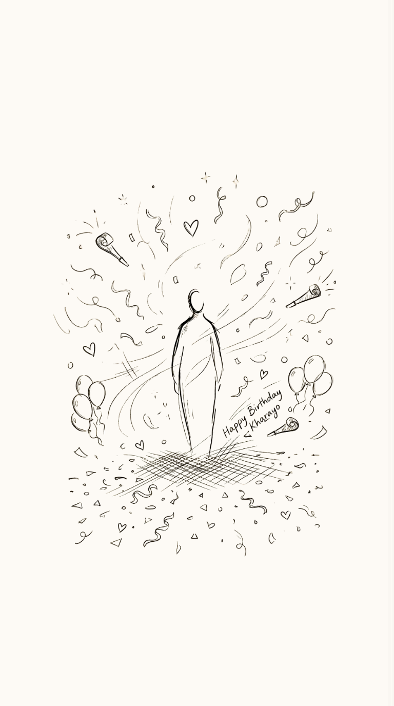
Today, the world feels gentler because you arrived in it. May this new year hold you softly, embrace all of your goals and dreams, and return your kindness to you in quiet, tender ways. May it remind you again and again that your existence is a gift, in itself The time celebrates.